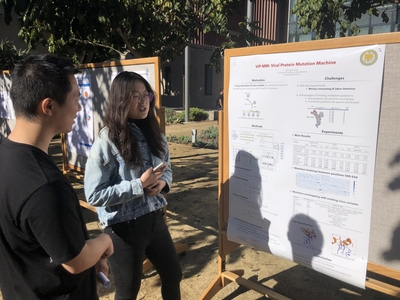
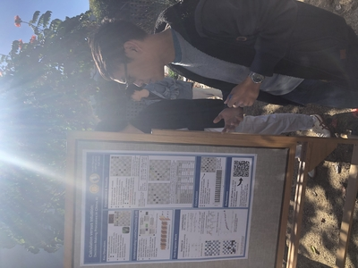
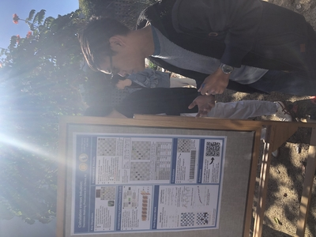
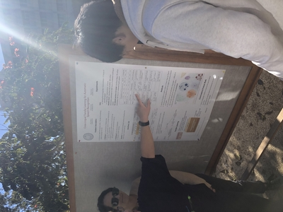
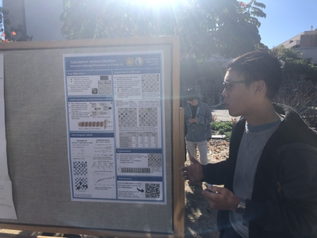

CS291K 2022 Fall: Machine Learning Project Presentation Day (Dec 5, 2022) |
Photo gallery

 



Projects
| Title | Team | |
|---|---|---|
| 1 | Offline Policy Evaluation with Adaptively Collected Data | Sunil Madhow |
| 2 | An Exploration of Facial Emotion Recognition Models and Building a User-Friendly Interface | Gautam Mundewadi, Chinmay Sonar |
| 3 | How should I pronounce your name? | Avani Tanna, Marius Fleischer, Aditya Gulati |
| 4 | Predicting Earnings Surprises from Conference Call Transcripts with Deep Learning | Ross Koval |
| 5 | VIP-MM: Viral Protein Mutation Machine | Zhenqiao Song |
| 6 | Can You Take A Punch?: A Resiliency Survey Against Adversarial Attacks of Deep Models | Aaron Jimenez |
| 7 | On Neural Ordinary Differential Equations for Natural Language Tasks | Danqing Wang |
| 8 | Towards Safe and Trustworthy AI Systems with FACT | Alex Mei |
| 9 | Object Detection using RetinaNet | Brian Lee, Punnal Ismail Khan, Kimia Afshari |
| 10 | Calculation versus Intuition: Contrasting Decision-Making Processes in Chess AI | Lucas Nguyen |
| 11 | A Hindsight based Backward & Forward Exploration Strategy for State Space Search Problems. | Vihaan Akshaay Rajendiran |
| 12 | Machine Predictions on Pretrail Release | Lei Yue |
| 13 | Dense Passage Retrieval: QANTA BERT | Zihan Ma, Qiming Wu, Shi Bu |
| 14 | Optimizing Transformer for Low-Resource Yakut-Russian NMT | Kyle Wong |
| 15 | It is All About Attention | Alfonso Amayuelas Fernandez, Deepak Nathani, Krushna Shah |
| 16 | Deep Learning based Movie Recommendation System | Pranjali Jain, Vinothini Gunasekaran, Apoorva Jakalannanavar Halappa Manjula |
| 17 | Visualizing Text with Diffusion Models | Bairu Hou, Yujian Liu, Jiabao Ji |
| 18 | Deployment efficient reward free RL with linear representation. | Dan Qiao |
| 19 | Attention for Brain Network Analysis | Christos Zangos |
| 20 | Agile Compressed Time-Through Back-Propagation Spiking Neural Network for edge intelligence | Boxun Xu |
| 21 | Neuroformer: A Transformer Framework for Multimodal Neural Data Analysis | Antonis Antoniades |
| 22 | Improving Diffusion-Language-Model sampling speed with ordinary differential equations | Xianjun Yang |
| 23 | Differential Privacy in Survival Analysis | Esha Singh |
| 24 | Hierarchical Representation Learning for Network Data | Danish Ebadulla, Harsha Miryala, Taanya Anand, Satyandra Guthula |
| 25 | Zero-shot Dense Retrieval with Contrastive Dual Learning | Shanxiu He |
| 26 | Cross Lingual Transfer Learning for Automatic Speech Recognition | Shinda Huang, Nawel Alioua, Rasta Tadayon Tahmasebi |
| 27 | Towards Sanskrit-English NMT | Rajan Saini |
| 28 | Constrained Text Generation from the Pretrained Embedding Space | Wenda Xu |
| 29 | Parameter- and Memory-Efficient Language Modeling with Ladder-Side Network | Kangyou Yu, Weizhi Wang |
| 30 | On Recent Progress in Long Sequence Modeling | Siqi Ouyang |
| 31 | Trajectory Retrieval for Learning-Free Efficient Stable Diffusion | Kexun Zhang |